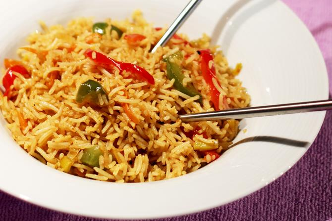
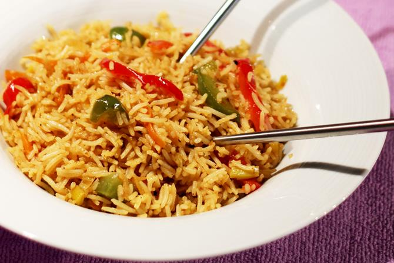
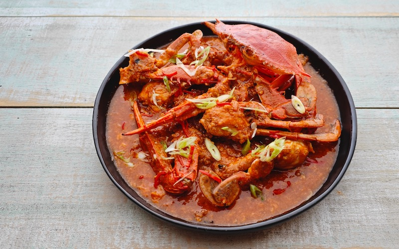
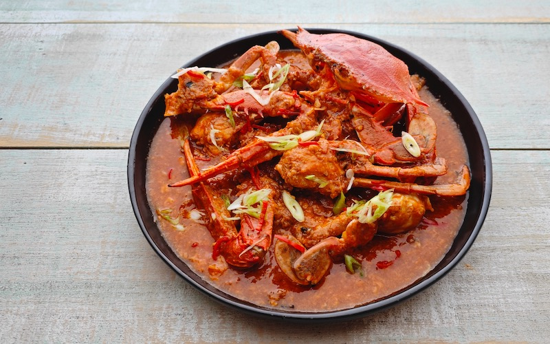

Vegetarian Hainanese Rice
A vegetarian twist on Singapore's national dish, made with fragrant rice and served with poached tofu or mock chicken, accompanied by chili sauce and vegetable broth.
 

A vegetarian twist on Singapore's national dish, made with fragrant rice and served with poached tofu or mock chicken, accompanied by chili sauce and vegetable broth.
 

This dish features tofu or mock crab stir-fried in a flavorful tomato and chili-based sauce, offering the same savory taste with a vegetarian spin.
A plant-based version of this classic spicy noodle soup, with a rich coconut milk base, tofu, and vegetables, garnished with bean sprouts and fresh herbs.
During our visit to Singapore, we dined at Anand Bhavan, where we enjoyed an array of vegetarian delights, including delicious dosas, curries, and aromatic rice dishes in a welcoming atmosphere.